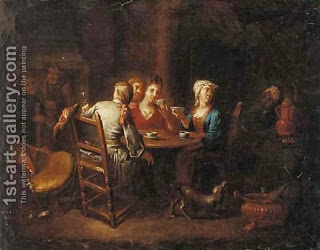

Pesachim 109 - More wine
Everybody should drink wine at the Seder: men, women and children, because the miracle of Exodus happened to all. However, not everybody enjoys the wine. It is also important for everyone to be joyful on a holiday, and therefore man gladden their hearts with wine, women - with new dresses, and children are given roasted nuts and sweets. The nosh serves to keep the children awake at the Seder, since "tell you son and daughter" is an important part of the Seder. As an illustration, Rabbi Akiva never liked to say, "Let’s all stand up and leave the study hall," except for two occasions: on the eve of Passover, when one needs to make the kids have an afternoon nap, to stay awake at the Seder, and before Yom Kippur - since it is a mitzvah to eat then.
Measures (size of the wine cup, amount of matzah, amount of vegetables, etc.) play an important role at the Seder and in other areas. There are two ways to specify them: one based on geometry (such as the volume of a mikvah measured as three cubic "ama" - elbow), and another based on volume (egg volume, olive volume, etc.) One would expect these two ways to agree, but in the eighteenth century Rabbi Yechezkiel Landau measured egg volumes and found a discrepancy by the factor of two. Either the people or the eggs must have changed, and this leaves us with two estimates for each given measure.
Art: Company drinking tea and wine in an inn by (after) Heroman Van Der Mijn